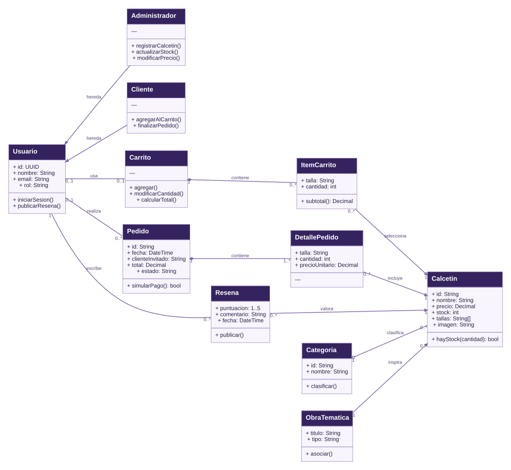
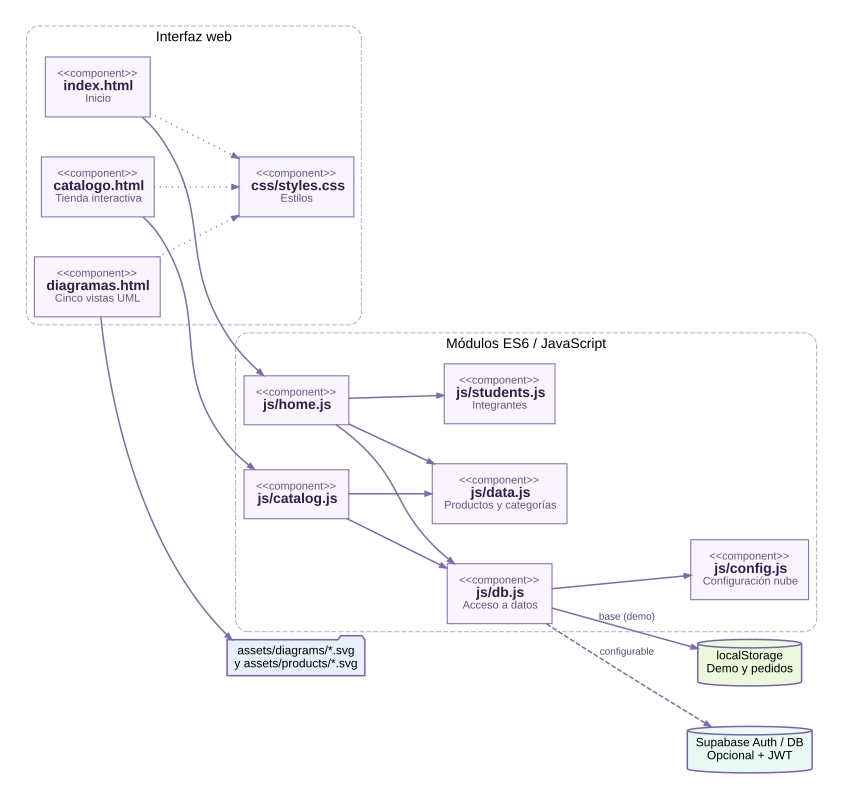
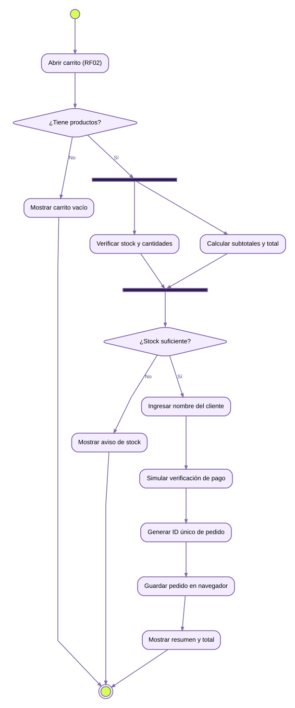
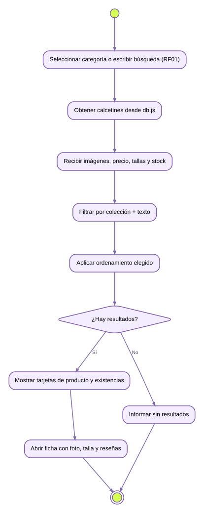
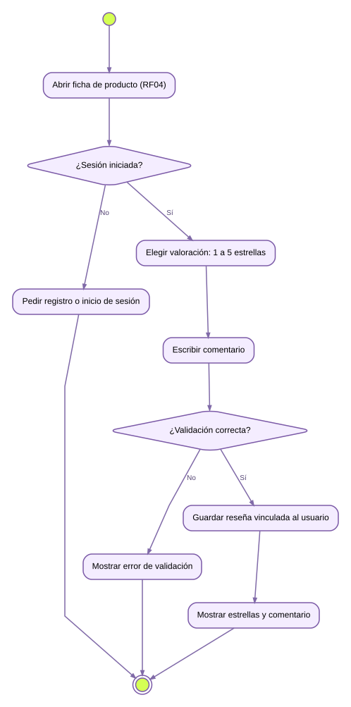
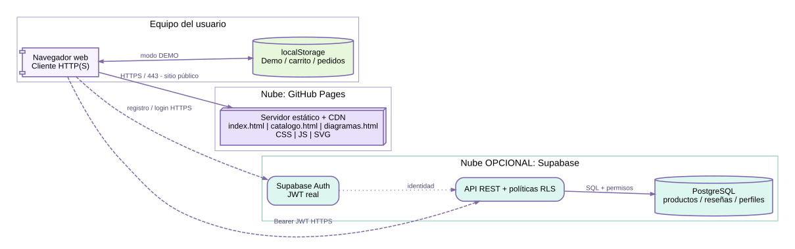
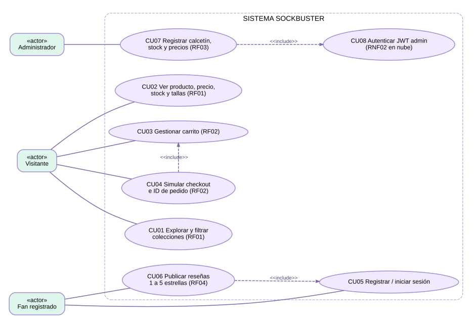

Una tienda. Cinco vistas.
El paradigma 4+1 permite comprender Sockbuster desde distintas perspectivas: qué datos maneja, cómo se organiza el código, cómo interactúan los procesos, dónde se despliega y qué tareas pueden realizar los usuarios.
Requerimientos del sistema
La siguiente tabla enlaza explícitamente los cuatro requerimientos funcionales y los dos no funcionales con una función visible de la web o su diseño arquitectónico.
| Código | Necesidad | Evidencia en Sockbuster | Vistas relacionadas |
|---|---|---|---|
| RF01 | Catálogo por colecciones temáticas; foto, precio, stock y tallas. | Catálogo: filtros por colección, buscador, ordenamiento y detalle. | Lógica · Procesos · Escenarios |
| RF02 | Carrito, cantidades, checkout simulado e ID único de pedido. | Carrito: sumar/restar, resumen y comprobante simulado. | Lógica · Procesos · Escenarios |
| RF03 | Crear modelos, asociar película o serie, cambiar stock y precios. | Gestión de inventario con inicio de sesión administrador. | Lógica · Desarrollo · Escenarios |
| RF04 | Usuarios registrados dejan reseñas y valoraciones de 1 a 5 estrellas. | Ficha de producto con registro, login, estrellas y comentario. | Lógica · Procesos · Escenarios |
| RNF01 | Disponibilidad web pública en hosting en la nube y carga óptima. | Sitio estático preparado para GitHub Pages vía HTTPS y recursos SVG livianos. | Desarrollo · Física |
| RNF02 | HTTPS y autenticación JWT de funciones administrativas. | Modo seguro opcional con Supabase Auth, JWT y políticas RLS. El modo demo local no ofrece seguridad real. | Desarrollo · Física · Escenarios |
RF = lo que el sistema debe hacer. RNF = cómo debe funcionar, incluyendo disponibilidad y seguridad.
Vista lógica
Este diagrama de clases UML describe las entidades principales de la tienda: Usuario, Cliente, Administrador, Calcetín, Categoría, Obra Temática, Carrito, Pedido y Reseña. Incluye atributos, operaciones, herencia, asociaciones y multiplicidades (por ejemplo, una categoría contiene muchos calcetines).
Diagrama de clases
Ampliar SVG ↗
Ejemplo: una Reseña pertenece a un Usuario y a un Calcetín; un Pedido contiene uno o varios Detalles de Pedido.
La vista lógica representa las “cosas” del negocio y cómo se relacionan: calcetines, clientes, carritos, pedidos y reseñas.
Vista de desarrollo
El diagrama de componentes representa exactamente los archivos y módulos que forman la web: las tres páginas HTML, los estilos CSS, los módulos JavaScript, las ilustraciones y la capa de datos. Hay un repositorio local en modo demo y conexión opcional a Supabase en modo nube.
Diagrama de componentes
Ampliar SVG ↗
El archivo js/db.js actúa como capa de acceso a datos. js/catalog.js implementa la interacción del usuario.
La vista de desarrollo es el mapa de carpetas y archivos: muestra qué componente realiza cada tarea.
Vista de procesos
Modela qué ocurre cuando el usuario compra, filtra productos o publica una reseña. El flujo de checkout usa una bifurcación paralela para comprobar stock y calcular el total, seguida de una sincronización antes de generar el pedido.
Proceso de checkout · Diagrama de actividades (RF02)
Ampliar SVG ↗
La bifurcación (fork) y su unión (join) son la representación arquitectónica de tareas concurrentes. La implementación demo ejecuta estas validaciones sin hilos paralelos reales.
Filtrado de catálogo · Flujo del proceso (RF01)
Ampliar SVG ↗
Complementa el diagrama de secuencia incluido en uml/04-vista-proceso-filtrado.puml, con interacción Usuario → Interfaz → Controlador → Datos.
Publicación de reseñas · Diagrama de actividades (RF04)
Ampliar SVG ↗
La validación impide publicar sin sesión y exige una puntuación entre 1 y 5.
La vista de procesos explica el orden de los pasos, las decisiones y qué datos entran o salen durante una acción.
Vista física
El navegador solicita el sitio a GitHub Pages mediante HTTPS. En el modo de demostración, el carrito y los pedidos simulados quedan guardados en el navegador (localStorage). Si se configura el modo seguro, el navegador usa Supabase Auth para recibir JWT y una base de datos PostgreSQL protegida con RLS.
Diagrama de despliegue
Ampliar SVG ↗
Las líneas discontinuas indican componentes opcionales que no están activos hasta configurar Supabase.
Transparencia técnica (RNF02): GitHub Pages sirve páginas estáticas por HTTPS, pero no emite ni valida JWT por sí solo. El sistema incluye una ruta de implementación real con Supabase Auth y políticas RLS (supabase/schema.sql). Sin esa configuración, las cuentas de prueba y el inventario funcionan solo en el navegador y NO constituyen autenticación segura.
Escenarios y casos de uso
Los actores principales son Visitante, Fan registrado y Administrador. Los casos de uso muestran cómo sus acciones validan conjuntamente las otras cuatro vistas: navegar por productos, gestionar carrito, pagar de forma simulada, reseñar y administrar el inventario.
Diagrama de casos de uso UML
Ampliar SVG ↗
CU01 y CU02 validan RF01; CU03 y CU04 validan RF02; CU07 valida RF03; CU05 y CU06 validan RF04; CU08 representa RNF02 en modo nube.
Un fan entra al catálogo → filtra Ciencia ficción → abre un calcetín → elige una talla → lo añade al carrito → confirma el pedido → recibe un código como SB-20261113-AB12CD34. Esto conecta la vista lógica (Calcetín y Pedido), la de desarrollo (archivos JS), la de procesos (checkout) y la física (sitio en la nube y pedido local).
¿Qué debe funcionar en la entrega?
- Navegación de las 3 páginas HTML
- Nombre completo de cada estudiante en inicio
- Filtro y búsqueda por colección
- Precio, imagen, stock y tallas
- Carrito con cambio de cantidades
- Checkout y número único
- Registro / acceso y reseñas
- Edición de inventario
- 5 vistas y fuentes UML
- Repositorio público y URL activa